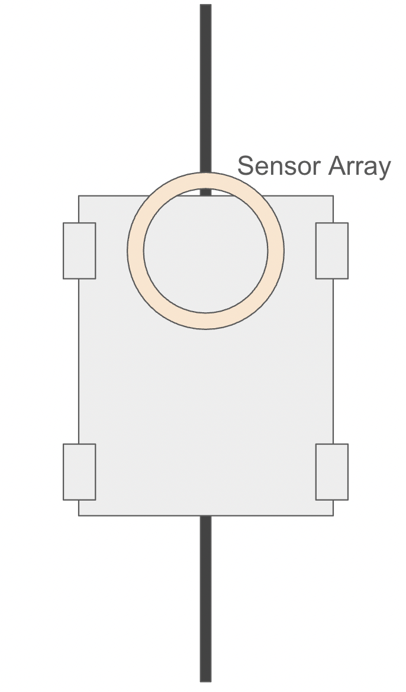

Building The Website
Having not made a website in years, I spent a significant amount of time exploring interesting personal website designs on Dribbble. While far beyond my abilities to create, I absolutely loved this. For my own website, I liked the idea of keeping it simple and using a material design inspired website.
Then for actually building this website, I picked out a broad color scheme I liked from Coolors. Using this, some design ideas from my search on dribbble, and codex CLI, I brought this website to life. After codex's first run, I had to spend some time cleaning up inflated code, redundant structures, and redesigning elements according to the PS70 needs.
Having the first pass through Codex here helped me save some time that would have been spent giving fundamental structure to the website.
Final Project Ideas
- Circular Line Following Array: In the little high school robotics I did, we used to always use either a flat 1d array or a camera to follow a line. This made me curious about the potential of building a circular 2-d array where the line following goal would be to balance the line alongside the vertical diameter of the circle. I found this interesting because fabricating a sensor array, tuning it for a chassis with a low turning radius, and figuring out how a PID works in this scenario. Here's a quick draft I made of the idea on google slides.

- A Clutch Style Mechanism: I was curious about how to use a single motor to perform tasks about multiple axis of rotations. As I thought about this more, the idea of making an automatic gearbox/transmission system seemed fascinating. Still thinking about where I would like to use it but even the idea of making a clutch-type gearbox seems fascinating to me in isolation.